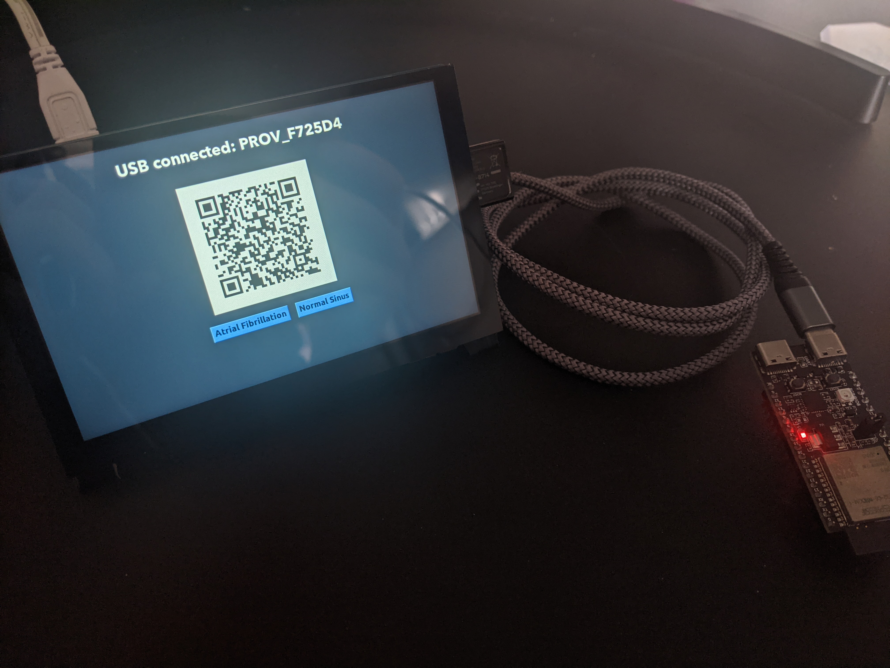

For my final-year project at University, I had the opportunity to collaborate with Stryker to develop a proof-of-concept Android application. The goal was to create a tool that allows users to easily monitor ECG events triggered by 'defibrillators', presenting the data in a readable and downloadable format.
The app is meant for retrieving and charting ECG events, using both AWS services and the SciChart library. It also tracks the location of each ECG event and the specific 'defibrillator' device that triggered it.
ECG events are uploaded through a custom-built Raspberry Pi frontend, which is primarily powered by the Tkinter GUI library. This was the best solution at the time for simulating the process of a defibrillator triggering an ECG event when the 'shock' button is pressed. The idea was to replicate the real-world process where someone administers a shock, the event data is sent to a users' device, and then the data is available for download when medical professionals arrive.
The Raspberry Pi frontend consists of a touchscreen and an ESP-32 device. The ESP-32 acts almost as a validation device, simulating an attachment found in actual Stryker defibrillators. If the ESP-32 is disconnected, the communication functionality is disabled. The touchscreen functions as a simple replacement for the physical 'shock' button.
This setup also provided extra features, such as the ability to upload and display both Atrial and Normal Sinus readings on the chart page, showcasing a variety of ECG patterns. As well as this, it supported the display of QR codes for simplified setup through the app, which in a real-world scenario would be replaced by a sticker on the device itself.
It's important to note that any ECG events uploaded or stored in the app do not contain any patient data or information. All readings have been modified for data optimisation purposes.
The app includes several key features, such as two-factor biometric authentication for enhanced security, the ability to update profile details like email and birthdate, and a comprehensive Help page to assist users with their inquiries. Push notifications are also integrated, so whenever a user uploads ECG data, they receive an immediate alert that takes them to the specific ECG information.
